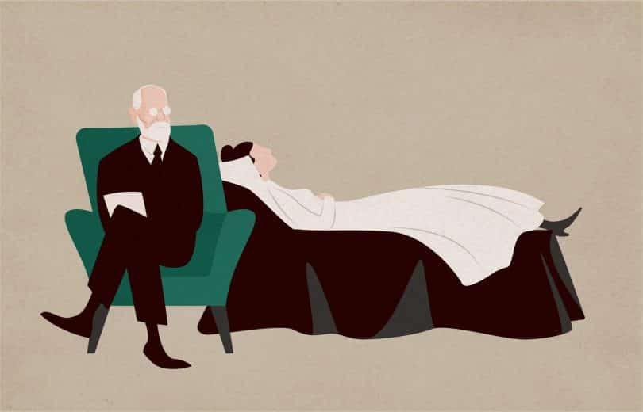

LICENCIADA EN PSICOLOGIA-UBA
ROJAS NAHIR AYELEN
Psicóloga con orientación psicoanalítica, el dispositivo terapeutico busca acompañar a realizar un trabajo personal en pos de lograr armonía entre el interior propio y el entorno. La condición principal del tratamiento es construir un espacio que se acople a las necesidades de cada sujeto y no que el sujeto tenga que acoplarse a un dispositivo ni a un marco teorico.
Psicoterapia para adultos y niños desde una escucha psicoanalítica acoplada a un marco psicodinámico. Trabajo interdisciplinario. Experiencia en integraciones escolares, acompañamientos y orientación a padres.
